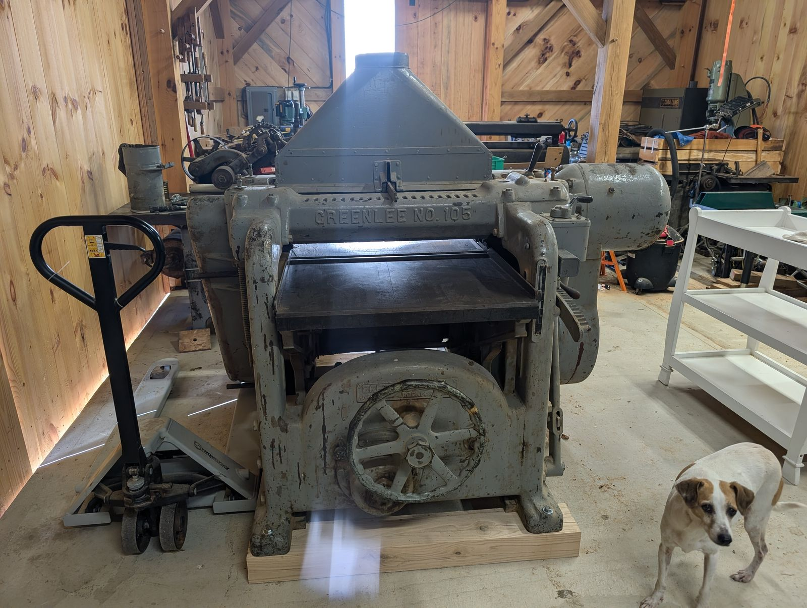
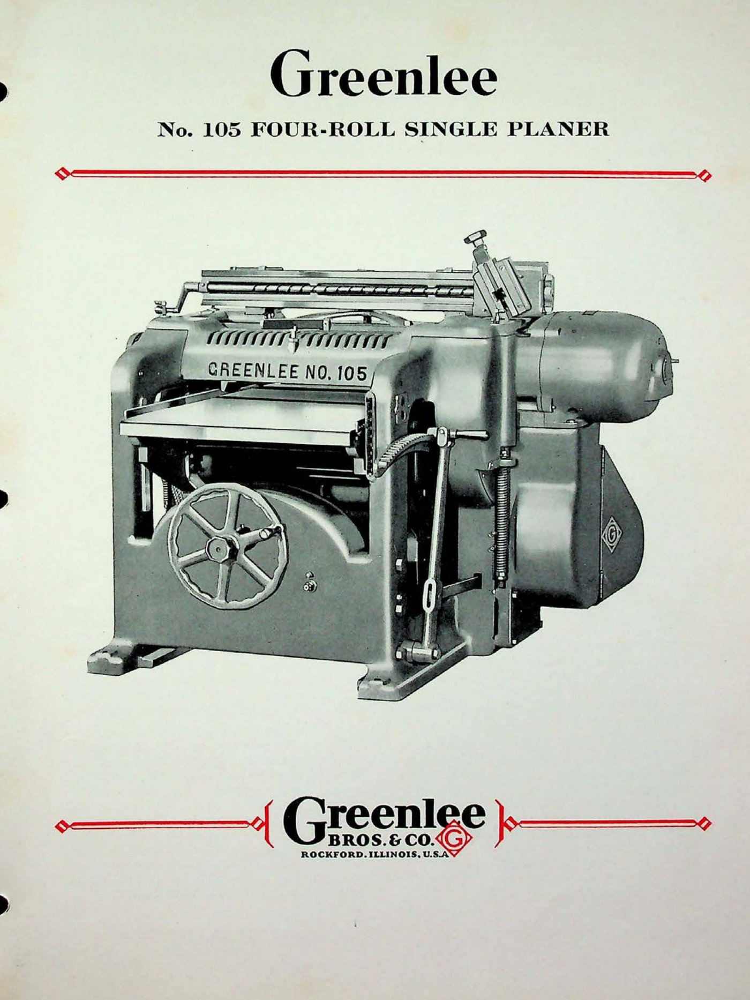

No. 105 30″ Industrial Planer
Wide-slab thicknessing · 100-Series · May 1937

The machine
A thicknessing planer does the shop’s most fundamental work: it takes rough, wandering lumber and makes it flat, parallel, and a known dimension. Feed rolls carry the slab under a spinning cutterhead; what comes out the far end is stock you can actually build with. Thirty inches of width is industrial territory — wide enough for glued-up panels, thick slabs, and the kind of timber most machines never see.
The one in this collection
Serial 51706 left Rockford in May 1937, which is worth pausing on. In 1937 the country was eight years into the Depression, and a factory ordering a thirty-inch planer was making a statement of confidence in the future. Machines from these years were built without shortcuts — the order books were thin, and every casting that went out the door carried the company’s reputation on it.
In this collection the 105 anchors the heavy end of the work: everything square begins here, as rough slabs go in and dimensioned lumber comes out.
From the Catalog

“The Greenlee No. 105 has been judged the most highly developed single planer in the four-roll field… It is a strictly modern machine in every respect… capable of the finest grade of cabinet planing.” Greenlee Bulletin No. 105 · general-line catalog, 1930s
- Catalog name
- Four-Roll Single Planer
Catalog scan courtesy of VintageMachinery.org.